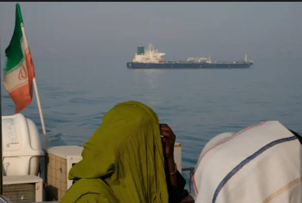

The announcement of a framework agreement between the United States and Iran marks the most significant diplomatic breakthrough since the outbreak of the 2026 conflict.
The proposed deal includes a ceasefire, reopening of the Strait of Hormuz, the lifting of the U.S. naval blockade, and a roadmap for future negotiations on Iran's nuclear program and sanctions relief.

At the beginning of the conflict, the United States and its allies sought to pressure Iran militarily and economically while demanding strict limitations on its nuclear activities.
Reports indicate that discussions on uranium enrichment, sanctions relief, and frozen Iranian assets will continue during a 60-day negotiation period.
Another factor strengthening Iran's narrative is the reopening of the Strait of Hormuz and the end of the naval blockade.
Global oil markets reacted positively, with prices falling after the announcement, highlighting the importance of stability in the Gulf.
The reaction from Israel further reinforces perceptions of an Iranian diplomatic success.
Nevertheless, declaring a definitive Iranian victory would be premature.
If successfully implemented, however, the deal may be remembered as a moment when Iran preserved many of its core interests while securing relief from some of the pressures that triggered the conflict in the first place.
Israel's Role: The Most Contested Element of the Peace Framework
While the ceasefire has been welcomed across much of the international community, one unresolved issue continues to cast a shadow over the agreement: Israel's future military posture in Lebanon and its willingness to fully embrace the diplomatic framework.
"A peace agreement is only as strong as the commitment of every party to uphold it."
Israel's position has emerged as one of the most controversial aspects of the post-war settlement. Although Washington and Tehran have committed to a roadmap designed to reduce tensions, Israeli officials have indicated that certain military operations and security deployments may continue beyond the ceasefire period.
Critics argue that such actions risk weakening confidence in the peace process. Diplomatic agreements rely not only on negotiated terms but also on public trust that all participants are moving toward the same objective. Continued military activity, even when justified as a security necessity, can create uncertainty regarding the long-term durability of the settlement.
Why This Matters
Regional observers warn that unresolved military questions could undermine the fragile momentum created by the ceasefire. If competing interpretations of the agreement persist, the framework may struggle to evolve into a lasting political settlement.
The broader political impact extends beyond the battlefield. Across parts of the Middle East, continued deployments have strengthened narratives portraying Israel as reluctant to fully transition from military pressure to diplomatic engagement. Whether such perceptions are accurate or not, they continue to influence regional opinion and shape international discourse surrounding the agreement.
Ultimately, the future of the peace framework may depend on whether all parties can transform temporary restraint into a sustainable commitment to regional stability.